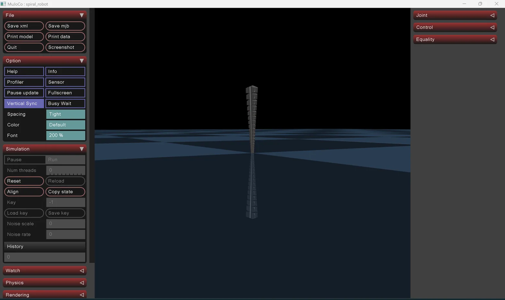

返回硬件项目索引
返回硬件项目索引遥控触手
阅读项目文档 ↓本项目围绕绳驱动连续体柔性机械臂的设计与运动控制展开，主要研究柔性结构的建模、驱动方式及运动特性。
项目参考相关连续体机器人研究，采用多节圆盘与柔性连接结构，通过三根驱动绳的长度变化实现机械臂的弯曲运动。前期利用SolidWorks完成结构建模，对圆盘尺寸、节间距及整体结构参数进行调整，并结合3D打印开展实物制作与装配。在此基础上，使用MuJoCo搭建仿真环境，探索不同绳长组合下机械臂的运动状态，尝试实现末端位置控制及交互操作。
项目研究过程中，逐步将重点聚焦于单根柔性机械臂的结构优化与运动控制，通过建模、仿真与实物制作相结合的方式，分析绳驱动结构的运动特点及存在的问题，为后续进一步优化提供参考。



项目文档
项目介绍（待施工
项目介绍（待施工
项目简介
最开始是看到了中科大有关 SpiRobs 仿生螺旋机器人的文章，做的一个复刻。
最初的设计是做一个由三根触手组成的小型机械臂，通过舵机控制三根绳子的收放，让触手向不同方向弯曲，最好还能缠绕、抓取一些简单的物品，后续从自动化改成摇杆控制，算是一个比较有意思的桌面玩具。
项目成长
- 第一阶段：阅读中科大SpiRobs相关论文，了解触手的结构原理和绳驱动方式，同时查找相关的开源代码，学习其中的建模方法和控制逻辑。因为之前没有接触过这类机器人，所以前期主要是在补充相关知识。
- 第二阶段：开始使用SolidWorks设计触手的基本结构。首先还是得先了解所需要用到的所有零件，才能真正的高效规划，所以是先进行了很长时间的规划。之后开始尝试根据论文中的螺旋曲线进行建模，后面因为发现了有些参数下触手前端的竹节太小，打印的效果不是特别好，所以调整了好几组参数，同时也设计了确定了舵机的型号，并且规划了安装位置和整体布局。
- 第三阶段： 使用树脂光固化打印制作触手，进行组装和实际测试。这一阶段主要是研究三根绳子的收放与触手弯曲方向之间的关系。通过不断调整舵机的转动角度和绳子的长度，尝试让触手向不同方向弯曲、卷曲。实际制作之后也发现，有些在建模时看起来没有问题的设计，真正组装起来还是会遇到不少麻烦，所以中间又对部分结构进行了一些参数上的调整。
- 第四阶段：主要是项目的推翻重建。在实际测试的过程中发现，虽然能够通过舵机控制触手弯曲，但是要让触手按照预期的方向运动，甚至自动缠绕物品，还是比较困难的。特别是三根绳子之间需要相互配合，不能简单地分别控制。同时，因为控制的函数拟合需要大量的数据，目前的模型不能够实现这个频率的使用性能需求。因此，后面开始使用MuJoCo进行物理仿真，希望先在电脑上研究不同绳长对应的弯曲情况，再考虑如何应用到实体上。
- 第五阶段： 在MuJoCo中尝试搭建多节触手模型，研究三根驱动绳的控制方式，期间决定使用手柄实时控制触手，转向做一个娱乐项目
AI使用情况
- 向ai学习实施项目所需要的知识
- 并且整个项目方案也是在与ai讨论过程中设计的，主要是ai能给我提供很多灵感
- 不喜欢写代码……所以基本上所有代码都是ai写的，但是代码逻辑是我提前跟ai确认的，不然我自己用着也不放心
- and，有些文字工作利用ai润色一下
交流与心得
（好久之前交流的了……然后最近忙晕了，下次再回忆补充吧就
暑期自习笔记（待施工
暑期自习笔记（待施工
*主要的内容还是来自于做项目过程中的收获*
论文阅读
- 如何快速抓住论文的要点：首先肯定是要带着目的去读论文，通过摘要去大致了解一下这篇论文（个人感觉更快的是用ai梳理一下论文的整体论证逻辑、思路啥的……），之后再重点读那些对你有用的部分，论文里面的一些公式和数据可以多注意一下
- 如何选择并精读论文的某一模块：还是针对于你读这篇论文的目的吧🤔
solidworks建模收获
- 关于利用函数建模：首先，导入点的方法是不可以取的！！！然后呢，貌似只有solidworks才支持函数画图，画完图之后再叠一层草稿，之后每次在函数上面画图的时候，要把无关紧要的限制条件去掉（比如自动生成的垂直and平行），有些时候就会莫名其妙的冲突了……很神奇
- 关于装配体与零件的转化：这个……还是去b站上学习一下吧
- 关于零件拆分问题：有时候你零件画完才会发现貌似需要给他拆解成装配件……到时候就用上这个了
项目规划
- 做一个项目之前一定一定要把整个项目规划好，之后再做会比较顺，这次就是仗着自己只想做一个复刻，就直接动手做，马上就垮掉了
- 要先把各部分的模块关系梳理好，再动手。比如我这次的项目，舵机的选择关系到我整个布局的设计，而布局的设计又关涉到我的触手的尺寸，舵机的选择也涉及了我的控制逻辑，所以，当我最开始的工作是设计触手的时候，就已经注定我会多次反复修改的结局
3d打印收获
- 关于光固化误差与极限尺寸：经过实验发现，极限是0.8mm（如果没有记错的话），然后，因为光固化也是一层一层堆叠上去的，所以如果厚度比较大的情况下，这个孔隙的直径至少要增加大概2mm
- 还有3d打印的单价（bushi：才发现，原来3D打印是真的贵，可以找有学生优惠的
视觉模块收获
- 关于常见视觉模块的一些认识
- 关于视觉模块硬件部分的认识：树莓派的组件其实是很多模块组合起来的，所以，为了节约成本，也可以选择自己组装🤭
- 关于视觉模块的处理代码：这个可以在硬件上实现，也可以在电脑上用python跑出来
- 关于相机的类型和摆放位置：这个还是比较的……麻烦的，因为这个涉及到了整体的布局，还有我的建模。种类比较多，单相机，双相机的，深度相机and各种成像相机。这个布局怎么样不会被遮挡，感觉尝试下来就是……量身定做吧……嗯对
电路板与各种控制版
- 主要还是看手册：各种引脚+你的代码咋写的
- 咨询ai（bushi
仿真模块
- 物理仿真的运行原理
- 物理仿真重要的参数设置：硬度、刚度、弹性、还有连接关系……
- 如何构建物理仿真
提问的艺术
- 发现一个和ai交互的非常好的办法，指令之后，让ai向我提问，直到他95%确定能理解我的意思
暑期项目方案（待施工
暑期项目方案（待施工
零、确定需求
一、项目基本信息
- 项目名称：遥控玩具触手
- Mentor：朱子衡
- 预期完成时间：开学前
---
二、项目目标
- 初期目标：参考中科大SpiRobs的研究，复现一个可以自由弯曲、卷曲的仿生触手。最开始设想的是制作三根触手组成的小型机械臂，通过舵机控制触手进行空间螺旋的运动，然后对目标物体进行一个抓取，后面改成了一个触手的自动化抓取。
- 后期目标：在实际制作过程中发现，线下的工具无法实现自动化的数据采集，于是转变为通过MuJoCo仿真，研究绳长变化与触手弯曲形态之间的关系，并尝试实现手柄遥控，以及触手接触物体后调整方向、继续卷曲等功能，然后就从复现转化为做一个桌面玩具。
---
三、实施与备用方案
- 实现思路：
- 首先参考中科大SpiRobs的论文和开源项目，了解仿生触手的基本结构和运动原理，在此基础上进行简化和复现。
- 结构建模方面： 使用SolidWorks设计触手的竹节结构，参考论文中的螺旋曲线参数，调整竹节的大小、数量和间距。整体采用多节竹节串联的方式，中间使用柔性连接件，周围布置三根驱动绳，方便控制不同方向的弯曲。
- 实体制作方面： 采用树脂光固化打印制作竹节，完成触手组装。通过舵机收放三根驱动绳，改变各节之间的相对位置，从而实现触手弯曲。
- 电路及控制方面： 最开始计划使用ESP32控制舵机，通过调整舵机的转动角度改变绳长。由于三根绳子不能完全独立地收放，因此需要设计相应的控制逻辑，让三根绳子能够配合运动。
- 整体配合： 原本打算先完成实体触手的制作和测试，再将控制程序应用到三触手组合中。后来调整为先研究单根触手，在仿真中测试不同的控制方式，如果能够实现比较稳定的运动控制，再考虑将其应用到实体上。
- 替代方案（当然，这个是在实践过程中想到的）：
- 结构方面： 如果按照论文参数直接建模，部分竹节尺寸过小，不方便打印和组装，就适当调整螺旋曲线参数和竹节尺寸，优先保证结构能够正常制作和运动。
- 驱动方面： 如果三根绳子难以实现精确的协调控制，可以先分别测试单根绳子的收放效果，再研究两根绳子之间的配合，逐步完善三绳控制。
- 控制方面： 如果暂时无法实现自动缠绕、抓取，可以先实现手动控制触手向不同方向弯曲，或者是转化为遥控。
- 数据收集方面： 线上搭建触手的物理模型，将三根驱动绳的长度作为控制变量，观察不同输入下触手的运动情况，同时尝试获取末端位置等数据，研究绳长与触手运动之间的关系。
- 参考资料：
- 中科大SpiRobs仿生螺旋机器人相关论文（Device，2024），主要参考其结构设计和绳驱动原理。
- SpiRobs/Open-Spiral-Robots相关开源资料，主要学习建模思路和代码结构。
---
四、实施计划
需给出每一阶段的具体的实施内容(需考虑线下实践环节[如焊接、打印等可能需要来学校])。
- 前期准备：主要是阅读论文、学习相关知识。因为之前没有接触过柔性机器人，所以需要先弄明白触手为什么能够弯曲、三根绳子分别起什么作用，以及整个结构应该如何设计。同时查找相关开源资料，确定基本的实现方案，并准备后续需要使用的舵机、驱动绳及其他零件。
- 模块开发：
- 硬件：使用SolidWorks完成触手竹节的建模，网上用树脂激光打印，随后进行穿线、组装和舵机安装。测试过程中如果出现尺寸不合适、绳子运动不顺畅等问题，就重新调整零件和装配方式。
- 软件：使用ESP32编写基本的舵机控制程序，研究舵机转角与绳长变化之间的关系。后续使用Python和MuJoCo搭建仿真模型，尝试通过不同的绳长输入控制触手运动，并获取相应的仿真数据。
- 联调测试：首先测试单根驱动绳能否正常带动触手弯曲，然后逐步尝试两根、三根绳子的协调控制。将实体测试中观察到的运动情况与MuJoCo仿真进行比较，检查仿真是否能够较好地反映实体触手的弯曲情况，并根据结果调整控制逻辑。
- 完善优化：重点完善单根触手的运动控制，尝试通过手柄控制触手的弯曲方向，并研究触手接触物体后的运动调整。如果时间允许，再进一步尝试卷曲包覆和简单抓取。最后整理项目的建模文件、代码、实验记录和遇到的问题，方便后续继续改进。
---
五、预算
主要器件/材料(主要考虑贵的，占整体预算大头的部分)：
预计总预算： ￥____530__